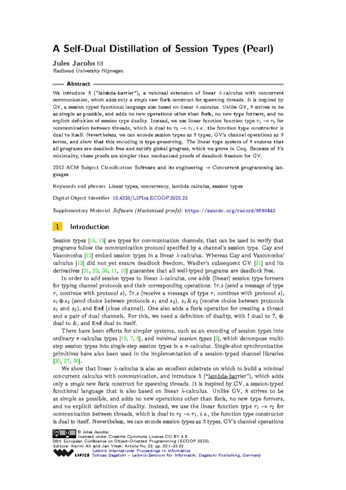

Session-typed languages such as GV add type formers, channel operations and a definition of duality. λ̄ adds only a fork construct to linear λ-calculus and communicates through the linear function type, which is dual to itself. Session types and GV's operations can be encoded in it, and its deadlock freedom has a simpler proof, in Coq.

Read the paperWe introduce λ̄ (“lambda-barrier”), a minimal extension of linear λ-calculus with concurrent communication, which adds only a single new fork construct for spawning threads. It is inspired by GV, a session-typed functional language also based on linear λ-calculus. Unlike GV, λ̄ strives to be as simple as possible, and adds no new operations other than fork, no new type formers, and no explicit definition of session type duality. Instead, we use linear function function type τ₁ ⊸ τ₂ for communication between threads, which is dual to τ₂ ⊸ τ₁, i.e., the function type constructor is dual to itself. Nevertheless, we can encode session types as λ̄ types, GV’s channel operations as λ̄ terms, and show that this encoding is type-preserving. The linear type system of λ̄ ensures that all programs are deadlock-free and satisfy global progress, which we prove in Coq. Because of λ̄’s minimality, these proofs are simpler than mechanized proofs of deadlock freedom for GV.
@inproceedings{jacobs2022lambdabar,
doi = {10.4230/LIPICS.ECOOP.2022.23},
url = {https://drops.dagstuhl.de/entities/document/10.4230/LIPIcs.ECOOP.2022.23},
author = {Jacobs, Jules},
keywords = {Linear types, concurrency, lambda calculus, session types, Software and its engineering → Concurrent programming languages},
language = {en},
title = {A Self-Dual Distillation of Session Types},
journal = {LIPIcs, Volume 222, ECOOP 2022},
volume = {222},
pages = {23:1-23:22},
publisher = {Schloss Dagstuhl – Leibniz-Zentrum für Informatik},
year = {2022},
copyright = {Creative Commons Attribution 4.0 International license}
}